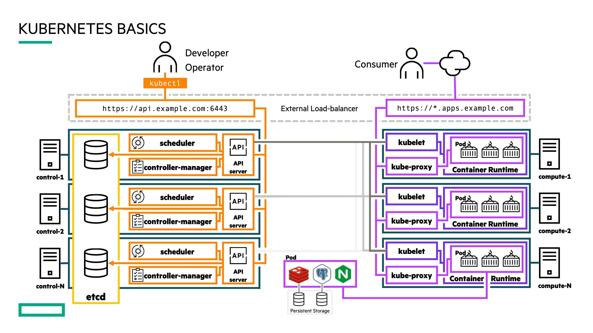
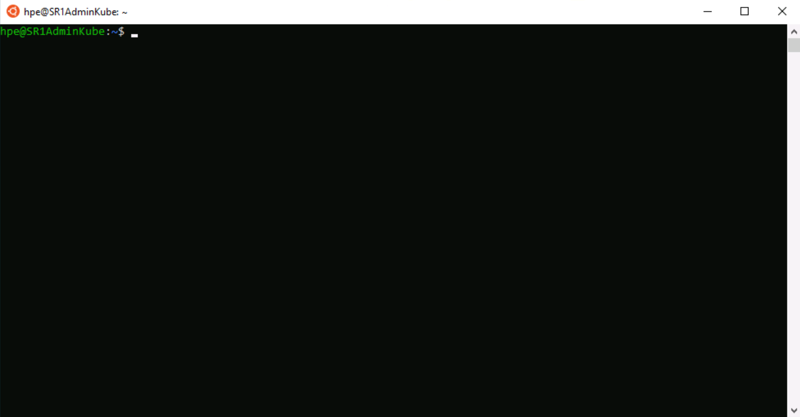
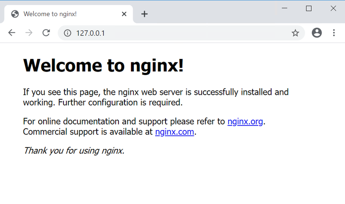
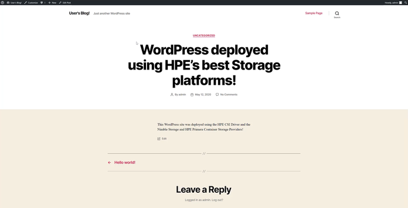

Overview¶
This is a free learning resource from HPE which walks you through various exercises to get you familiar with Kubernetes and provisioning Persistent storage using HPE Nimble Storage and HPE Primera storage systems. This guide is by no means a comprehensive overview of the capabilities of Kubernetes but rather a getting started guide for individuals who wants to learn how to use Kubernetes with persistent storage.
- Overview
- Kubernetes cluster
- Kubernetes Objects
- Lab 1: Tour your cluster
- Lab 2: Deploy your first Pod (Stateless)
- Lab 3: Install the HPE CSI Driver for Kubernetes
- Lab 4: Creating a Persistent Volume using HPE Storage
- Lab 5: Deploying a Stateful Application using HPE Storage (WordPress)
- Optional Lab: Advanced Configuration
- Cleanup (Optional)

Kubernetes cluster¶
In Kubernetes, nodes within a cluster pool together their resources (memory and CPU) to distribute workloads. A cluster is comprised of control plane and worker nodes that allow you to run your containerized workloads.
Control plane¶
The Kubernetes control plane is responsible for maintaining the desired state of your cluster. When you interact with Kubernetes, such as by using the kubectl command-line interface, you’re communicating with your cluster’s Kubernetes API services running on the control plane. Control plane refers to a collection of processes managing the cluster state.
Nodes¶
Kubernetes runs your workload by placing containers into Pods to run on Nodes. A node may be a virtual or physical machine, depending on the cluster. Each node is managed by the control plane and contains the services necessary to run Pods.
Kubernetes Objects¶
Programs running on Kubernetes are packaged as containers which can run on Linux or Windows. A container image is a lightweight, standalone, executable package of software that includes everything needed to run an application: code, runtime, system tools, system libraries and settings.
Pods¶
A Pod is the basic execution unit of a Kubernetes application–the smallest and simplest unit in the Kubernetes object model that you create or deploy. A Pod encapsulates an application’s container (or, in some cases, multiple containers), storage resources, a unique network IP, and options that govern how the container(s) should run.
Persistent Volumes¶
Because programs running on your cluster aren’t guaranteed to run on a specific node, data can’t be saved to any arbitrary place in the file system. If a program tries to save data to a file for later, but is then relocated onto a new node, the file will no longer be where the program expects it to be.
To store data permanently, Kubernetes uses a PersistentVolume. Local, external storage via SAN arrays, or cloud drives can be attached to the cluster as a PersistentVolume.
Namespaces¶

Kubernetes supports multiple virtual clusters backed by the same physical cluster. These virtual clusters are called Namespaces. Namespaces are intended for use in environments with many users spread across multiple teams, or projects. Namespaces are a way to divide cluster resources between multiple users.
Deployments¶
A Deployment provides declarative updates for Pods. You declare a desired state for your Pods in your Deployment and Kubernetes will manage it for you automatically.
Services¶
A Kubernetes Service object defines a policy for external clients to access an application within a cluster. By default, the container runtime uses host-private networking, so containers can talk to other containers only if they are on the same machine. In order for containers to communicate across nodes, there must be allocated ports on the machine’s own IP address, which are then forwarded or proxied to the containers. Coordinating port allocations is very difficult to do at scale, and exposes users to cluster-level issues outside of their control. Kubernetes assumes that Pods can communicate with other Pods, regardless of which host they land on. Kubernetes gives every Pod its own cluster-private IP address, through a Kubernetes Service object, so you do not need to explicitly create links between Pods or map container ports to host ports. This means that containers within a Pod can all reach each other’s ports on localhost, and all Pods in a cluster can see each other without NAT.
Lab 1: Tour your cluster¶
All of this information presented here is taken from the official documentation found on kubernetes.io/docs.
Overview of kubectl¶
The Kubernetes command-line tool, kubectl, allows you to run commands against Kubernetes clusters. You can use kubectl to deploy applications, inspect and manage cluster resources, and view logs. For a complete list of kubectl operations, see Overview of kubectl on kubernetes.io.
For more information on how to install and setup kubectl on Linux, Windows or MacOS, see Install and Set Up kubectl on kubernetes.io.
Syntax¶
Use the following syntax to run kubectl commands from your terminal window:
kubectl [command] [TYPE] [NAME] [flags]
where command, TYPE, NAME, and flags are:
-
command: Specifies the operation that you want to perform on one or more resources, for example create, get, describe, delete. -
TYPE: Specifies the resource type. Resource types are case-insensitive and you can specify the singular, plural, or abbreviated forms. For example, the following commands produce the same output: -
NAME: Specifies the name of the resource. Names are case-sensitive. If the name is omitted, details for all resources are displayed, for examplekubectl get pods.
Get object example command:
kubectl get nodes
kubectl get node <node_name>
Describe object example command:
kubectl describe node <node_name>
Create object example command
kubectl create -f <file_name or URL>
The below YAML declarations are meant to be created with kubectl create. Either copy the content to a file on the host where kubectl is being executed, or copy & paste into the terminal, like this:
kubectl create -f- (press Enter)
< paste the YAML >
(CTRL-D for Linux) or (^D for Mac users)
Kubernetes Cheat Sheet
Find more available commands at Kubernetes Cheat Sheet on kubernetes.io.
Getting to know your cluster:¶
Let's run through some simple kubectl commands to get familiar with your cluster.
First we need to open a terminal window, the following commands can be run from a Windows, Linux or Mac. In this guide, we will be using the Window Subsystem for Linux (WSL) which allows us to have a Linux terminal within Windows.
To start a WSL terminal session, click the Ubuntu icon in the Windows taskbar.
It will open a terminal window. We will be working within this terminal through out this lab.

In order to communicate with the Kubernetes cluster, kubectl looks for a file named config in the $HOME/.kube directory. You can specify other kubeconfig files by setting the KUBECONFIG environment variable or by setting the --kubeconfig flag.
You will need to request the kubeconfig file from your cluster administrator and copy the file to your local $HOME/.kube/ directory. You may need to create this directory.
Once you have the kubeconfig file, you can view the config file:
kubectl config view
Check that kubectl and the config file are properly configured by getting the cluster state.
kubectl cluster-info
If you see a URL response, kubectl is correctly configured to access your cluster.
The output is similar to this:
$ kubectl cluster-info
Kubernetes control plane is running at https://192.168.1.50:6443
KubeDNS is running at https://192.168.1.50:6443/api/v1/namespaces/kube-system/services/kube-dns:dns/proxy
To further debug and diagnose cluster problems, use 'kubectl cluster-info dump'.
Now let's look at the nodes within our cluster.
kubectl get nodes
You should see output similar to below. As you can see, each node has a role control-plane or as worker nodes (<none>).
$ kubectl get nodes
NAME STATUS ROLES AGE VERSION
kube-group1 Ready control-plane,master 2d18h v1.21.5
...
You can list pods.
kubectl get pods
Quiz
Did you see any Pods listed when you ran kubectl get pods? Why?
If you don't see any Pods listed, it is because there are no Pods deployed within the "default" Namespace. Now run, kubectl get pods --all-namespaces. Does it look any different?
Pay attention to the first column, NAMESPACES. In our case, we are working in the "default" Namespace. Depending on the type of application and your user access level, applications can be deployed within one or more Namespaces.
If you don't see the object (deployment, pod, services, etc) you are looking for, double-check the Namespace it was deployed under and use the -n <namespace> flag to view objects in other Namespaces.
Once complete, type "Clear" to clear your terminal window.
Lab 2: Deploy your first Pod (Stateless)¶
A Pod is a collection of containers sharing a network and mount namespace and is the basic unit of deployment in Kubernetes. All containers in a Pod are scheduled on the same node. In our first demo we will deploy a stateless application that has no persistent storage attached. Without persistent storage, any modifications done to the application will be lost if that application is stopped or deleted.
Here is a sample NGINX webserver deployment.
apiVersion: apps/v1
kind: Deployment
metadata:
labels:
run: nginx
name: first-nginx-pod
spec:
replicas: 1
selector:
matchLabels:
run: nginx-first-pod
template:
metadata:
labels:
run: nginx-first-pod
spec:
containers:
- image: nginx
name: nginx
Open a WSL terminal session, if you don't have one open already.
At the prompt, we will start by deploying the NGINX example above, by running:
kubectl create -f https://scod.hpedev.io/learn/persistent_storage/yaml/nginx-stateless-deployment.yaml
We can see the Deployment was successfully created and the NGINX Pod is running.
Note
The Pod names will be unique to your deployment.
$ kubectl get deployments.apps
NAME READY UP-TO-DATE AVAILABLE AGE
first-nginx-pod 1/1 1 1 38s
$ kubectl get pods
NAME READY STATUS RESTARTS AGE
first-nginx-pod-8d7bb985-rrdv8 1/1 Running 0 10s
Important
In a Deployment, a Pod name is generated using the Deployment name and then a randomized hash (i.e. first-nginx-pod-8d7bb985-kql7t) to ensure that each Pod has a unique name. During this lab exercise, make sure to reference the correct object names that are generated in each exercise.
We can inspect the Pod further using the kubectl describe command.
Note
You can use tab completion to help with Kubernetes commands and objects. Start typing the first few letters of the command or Kubernetes object (i.e Pod) name and hit TAB and it should autofill the name.
kubectl describe pod <pod_name>
The output should be similar to this. Note, the Pod name will be unique to your deployment.
Name: first-nginx-pod-8d7bb985-rrdv8
Namespace: default
Priority: 0
Node: kube-group1/10.90.200.11
Start Time: Mon, 01 Nov 2021 13:37:59 -0500
Labels: pod-template-hash=8d7bb985
run=nginx-first-pod
Annotations: cni.projectcalico.org/podIP: 192.168.162.9/32
cni.projectcalico.org/podIPs: 192.168.162.9/32
Status: Running
IP: 192.168.162.9
IPs:
IP: 192.168.162.9
Controlled By: ReplicaSet/first-nginx-pod-8d7bb985
Containers:
nginx:
Container ID: docker://3610d71c054e6b8fdfffbf436511fda048731a456b9460ae768ae7db6e831398
Image: nginx
Image ID: docker-pullable://nginx@sha256:644a70516a26004c97d0d85c7fe1d0c3a67ea8ab7ddf4aff193d9f301670cf36
Port: <none>
Host Port: <none>
State: Running
Started: Mon, 01 Nov 2021 13:38:06 -0500
Ready: True
Restart Count: 0
Environment: <none>
Mounts:
/var/run/secrets/kubernetes.io/serviceaccount from kube-api-access-w7sbw (ro)
Conditions:
Type Status
Initialized True
Ready True
ContainersReady True
PodScheduled True
Volumes:
kube-api-access-w7sbw:
Type: Projected (a volume that contains injected data from multiple sources)
TokenExpirationSeconds: 3607
ConfigMapName: kube-root-ca.crt
ConfigMapOptional: <nil>
DownwardAPI: true
QoS Class: BestEffort
Node-Selectors: <none>
Tolerations: node.kubernetes.io/not-ready:NoExecute op=Exists for 300s
node.kubernetes.io/unreachable:NoExecute op=Exists for 300s
Events:
Type Reason Age From Message
---- ------ ---- ---- -------
Normal Scheduled 5m14s default-scheduler Successfully assigned default/first-nginx-pod-8d7bb985-rrdv8 to kube-group1
Normal Pulling 5m13s kubelet Pulling image "nginx"
Normal Pulled 5m7s kubelet Successfully pulled image "nginx" in 5.95086952s
Normal Created 5m7s kubelet Created container nginx
Normal Started 5m7s kubelet Started container nginx
Looking under the "Events" section is a great place to start when checking for issues or errors during Pod creation.
At this stage, the NGINX application is only accessible from within the cluster. Use kubectl port-forward to expose the Pod temporarily outside of the cluster to your workstation.
kubectl port-forward <pod_name> 80:80
The output should be similar to this:
kubectl port-forward first-nginx-pod-8d7bb985-rrdv8 80:80
Forwarding from 127.0.0.1:80 -> 8080
Forwarding from [::1]:80 -> 8080
Note
If you have something already running locally on port 80, modify the port-forward to an unused port (i.e. 5000:80). Port-forward is meant for temporarily exposing an application outside of a Kubernetes cluster. For a more permanent solution, look into Ingress Controllers.
Finally, open a browser and go to http://127.0.0.1 and you should see the following.

You have successfully deployed your first Kubernetes pod.
With the Pod running, you can log in and explore the Pod.
To do this, open a second terminal, by clicking on the WSL terminal icon again. The first terminal should have kubectl port-forward still running.
Run:
kubectl exec -it <pod_name> -- /bin/bash
You can explore the Pod and run various commands. Some commands might not be available within the Pod. Why would that be?
root@first-nginx-pod-8d7bb985-rrdv8:/# df -h
Filesystem Size Used Avail Use% Mounted on
overlay 46G 8.0G 38G 18% /
tmpfs 64M 0 64M 0% /dev
tmpfs 1.9G 0 1.9G 0% /sys/fs/cgroup
/dev/mapper/centos-root 46G 8.0G 38G 18% /etc/hosts
shm 64M 0 64M 0% /dev/shm
tmpfs 1.9G 12K 1.9G 1% /run/secrets/kubernetes.io/serviceaccount
tmpfs 1.9G 0 1.9G 0% /proc/acpi
tmpfs 1.9G 0 1.9G 0% /proc/scsi
tmpfs 1.9G 0 1.9G 0% /sys/firmware
While inside the container, you can also modify the webpage.
echo "<h1>Hello from the HPE Storage Hands on Labs</h1>" > /usr/share/nginx/html/index.html
Now switch back over to the browser and refresh the page (http://127.0.0.1), you should see the updated changes to the webpage.
Once ready, switch back over to your second terminal, type exit to logout of the NGINX container and close that terminal. Back in your original terminal, use Ctrl+C to exit the port-forwarding.
Since this is a stateless application, we will now demonstrate what happens if the NGINX Pod is lost.
To do this, simply delete the Pod.
kubectl delete pod <pod_name>
Now run kubectl get pods to see that a new NGINX Pod has been created.
Lets use kubectl port-forward again to look at the NGINX application.
kubectl port-forward <new_pod_name> 80:80
Back in your browser, refresh the page (http://127.0.0.1) and you should the webpage has reverted back to its default state.
Back in the terminal, use Ctrl+C to exit the port-forwarding and once ready, type clear to refresh your terminal.
The NGINX application has reverted back to default because we didn't store the modifications we made to a location that would persist beyond the life of the container. There are many applications where persistence isn't critical (i.e. Google uses stateless containers for your browser web searches) as they perform computations that are either stored into an external database or passed to subsequent processes.
As mission-critical workloads move into Kubernetes, the need for stateful containers is increasingly important. The following exercises will go through how to provision persistent storage to applications using the HPE CSI Driver for Kubernetes backed by HPE Primera or Nimble Storage.
Lab 3: Install the HPE CSI Driver for Kubernetes¶
To get started with the deployment of the HPE CSI Driver for Kbuernetes, the CSI driver is deployed using industry standard means, either a Helm chart or an Operator. For this tutorial, we will be using Helm to the deploy the HPE CSI driver for Kubernetes.
The official Helm chart for the HPE CSI Driver for Kubernetes is hosted on Artifact Hub. There, you will find the configuration and installation instructions for the chart.
Note
Helm is the package manager for Kubernetes. Software is delivered in a format called a "chart". Helm is a standalone CLI that interacts with the Kubernetes API server using your KUBECONFIG file.
Installing the Helm chart¶
Open a WSL terminal session, if you don't have one open already.
To install the chart with the name my-hpe-csi-driver, add the HPE CSI Driver for Kubernetes Helm repo.
helm repo add hpe-storage https://hpe-storage.github.io/co-deployments
helm repo update
Install the latest chart.
kubectl create ns hpe-storage
helm install my-hpe-csi-driver hpe-storage/hpe-csi-driver -n hpe-storage
Wait a few minutes as the deployment finishes.
Verify that everything is up and running correctly by listing out the Pods.
kubectl get pods -n hpe-storage
The output is similar to this:
Note
The Pod names will be unique to your deployment.
$ kubectl get pods -n hpe-storage
NAME READY STATUS RESTARTS AGE
pod/hpe-csi-controller-6f9b8c6f7b-n7zcr 9/9 Running 0 7m41s
pod/hpe-csi-node-npp59 2/2 Running 0 7m41s
pod/nimble-csp-5f6cc8c744-rxgfk 1/1 Running 0 7m41s
pod/primera3par-csp-7f78f498d5-4vq9r 1/1 Running 0 7m41s
If all of the components show in Running state, then the HPE CSI Driver for Kubernetes and the corresponding Container Storage Providers (CSP) for HPE Alletra, Primera and Nimble Storage have been successfully deployed.
Important
With the HPE CSI Driver deployed, the rest of this guide is designed to demonstrate the usage of the CSI driver with HPE Primera or Nimble Storage. You will need to choose which storage system (HPE Primera or Nimble Storage) to use for the rest of the exercises. While the HPE CSI Driver supports connectivity to multiple backends, configurating multiple backends is outside of the scope of this lab guide.
Creating a Secret¶
Once the HPE CSI Driver has been deployed, a Secret needs to be created in order for the CSI driver to communicate to the HPE Primera or Nimble Storage. This Secret, which contains the storage system IP and credentials, is used by the CSI driver sidecars within the StorageClass to authenticate to a specific backend for various CSI operations. For more information, see adding an HPE storage backend
Here is an example Secret.
apiVersion: v1
kind: Secret
metadata:
name: custom-secret
namespace: hpe-storage
stringData:
serviceName: primera3par-csp-svc
servicePort: "8080"
backend: 10.10.0.2
username: <user>
password: <password>
Download and modify, using the text editor of your choice, the Secret file with the backend IP per your environment.
wget https://raw.githubusercontent.com/hpe-storage/scod/master/docs/learn/persistent_storage/yaml/nimble-secret.yaml
wget https://raw.githubusercontent.com/hpe-storage/scod/master/docs/learn/persistent_storage/yaml/primera-secret.yaml
Save the file and create the Secret within the cluster.
kubectl create -f nimble-secret.yaml
kubectl create -f primera-secret.yaml
The Secret should now be available in the "hpe-storage" Namespace:
kubectl -n hpe-storage get secret/custom-secret
NAME TYPE DATA AGE
custom-secret Opaque 5 1m
If you made a mistake when creating the Secret, simply delete the object (kubectl -n hpe-storage delete secret/custom-secret) and repeat the steps above.
Creating a StorageClass¶
Now we will create a StorageClass that will be used in the following exercises. A StorageClass (SC) specifies which storage provisioner to use (in our case the HPE CSI Driver) and the volume parameters (such as Protection Templates, Performance Policies, CPG, etc.) for the volumes that we want to create which can be used to differentiate between storage levels and usages.
This concept is sometimes called “profiles” in other storage systems. A cluster can have multiple StorageClasses allowing users to create storage claims tailored for their specific application requirements.
We will start by creating a StorageClass called hpe-standard. We will use the custom-secret created in the previous step and specify the hpe-storage namespace where the CSI driver was deployed.
Here is an example StorageClasses for HPE Primera and Nimble Storage systems and some of the available volume parameters that can be defined. See the respective CSP for more elaborate examples.
apiVersion: storage.k8s.io/v1
kind: StorageClass
metadata:
name: hpe-standard
annotations:
storageclass.kubernetes.io/is-default-class: "true"
provisioner: csi.hpe.com
parameters:
csi.storage.k8s.io/fstype: xfs
csi.storage.k8s.io/provisioner-secret-name: custom-secret
csi.storage.k8s.io/provisioner-secret-namespace: hpe-storage
csi.storage.k8s.io/controller-publish-secret-name: custom-secret
csi.storage.k8s.io/controller-publish-secret-namespace: hpe-storage
csi.storage.k8s.io/node-stage-secret-name: custom-secret
csi.storage.k8s.io/node-stage-secret-namespace: hpe-storage
csi.storage.k8s.io/node-publish-secret-name: custom-secret
csi.storage.k8s.io/node-publish-secret-namespace: hpe-storage
csi.storage.k8s.io/controller-expand-secret-name: custom-secret
csi.storage.k8s.io/controller-expand-secret-namespace: hpe-storage
performancePolicy: "SQL Server"
description: "Volume from HPE CSI Driver"
accessProtocol: iscsi
limitIops: "76800"
allowOverrides: description,limitIops,performancePolicy
allowVolumeExpansion: true
apiVersion: storage.k8s.io/v1
kind: StorageClass
metadata:
name: hpe-standard
annotations:
storageclass.kubernetes.io/is-default-class: "true"
provisioner: csi.hpe.com
parameters:
csi.storage.k8s.io/fstype: xfs
csi.storage.k8s.io/provisioner-secret-name: custom-secret
csi.storage.k8s.io/provisioner-secret-namespace: hpe-storage
csi.storage.k8s.io/controller-publish-secret-name: custom-secret
csi.storage.k8s.io/controller-publish-secret-namespace: hpe-storage
csi.storage.k8s.io/node-stage-secret-name: custom-secret
csi.storage.k8s.io/node-stage-secret-namespace: hpe-storage
csi.storage.k8s.io/node-publish-secret-name: custom-secret
csi.storage.k8s.io/node-publish-secret-namespace: hpe-storage
csi.storage.k8s.io/controller-expand-secret-name: custom-secret
csi.storage.k8s.io/controller-expand-secret-namespace: hpe-storage
cpg: SSD_r6
provisioningType: tpvv
accessProtocol: iscsi
allowOverrides: cpg,provisioningType
allowVolumeExpansion: true
Create the StorageClass within the cluster
kubectl create -f http://scod.hpedev.io/learn/persistent_storage/yaml/nimble-storageclass.yaml
kubectl create -f http://scod.hpedev.io/learn/persistent_storage/yaml/primera-storageclass.yaml
We can verify the StorageClass is now available.
kubectl get sc
NAME PROVISIONER AGE
hpe-standard (default) csi.hpe.com 2m
Note
You can create multiple StorageClasses to match the storage requirements of your applications. We set hpe-standard StorageClass as default using the annotation storageclass.kubernetes.io/is-default-class: "true". There can only be one default StorageClass per cluster, for any additional StorageClasses set this to false. To learn more about configuring a default StorageClass, see Default StorageClass on kubernetes.io.
Lab 4: Creating a Persistent Volume using HPE Storage¶
With the HPE CSI Driver for Kubernetes deployed and a StorageClass available, we can now provision persistent volumes.
-
A
PersistentVolumeClaim(PVC) is a request for storage by a user. Claims can request storage of a specific size and access modes (e.g., they can be mounted ReadWriteOnce, ReadOnlyMany or ReadWriteMany). TheaccessModewill be dependent on the type of storage system and the application requirements. Block storage like HPE Primera and Nimble Storage, provision volumes usingReadWriteOnceaccess mode where the volume can only be mounted to a single node within the cluster at a time. Any applications running on that node can access that volume. Applications deployed across multiple nodes within a cluster that require shared access (ReadWriteMany) to the samePersistentVolumewill need to use NFS or a distribute storage system such as MapR, Gluster or Ceph. -
A
PersistentVolume(PV) is a piece of storage in the cluster that has been provisioned by an administrator or dynamically provisioned usingStorage Classes.
Creating a PersistentVolumeClaim¶
With a StorageClass available, we can request an amount of storage for our application using a PersistentVolumeClaim. Here is a sample PVC.
apiVersion: v1
kind: PersistentVolumeClaim
metadata:
name: my-pvc
spec:
accessModes:
- ReadWriteOnce
resources:
requests:
storage: 50Gi
Note
We don't have a StorageClass (SC) explicitly defined within this PVC therefore it will use the default StorageClass. You can use spec.storageClassName to override the default SC with another one available to the cluster.
Create the PersistentVolumeClaim.
kubectl create -f http://scod.hpedev.io/learn/persistent_storage/yaml/my-pvc.yaml
We can see the my-pvc PersistentVolumeClaim was created.
kubectl get pvc
NAME STATUS VOLUME CAPACITY ACCESS MODES STORAGECLASS AGE
my-pvc Bound pvc-70d5caf8-7558-40e6-a8b7-77dfcf8ddcd8 50Gi RWO hpe-standard 72m
Note
The Persistent Volume name is a randomly generated name by Kubernetes. For consistent naming for your stateful applications, check out StatefulSet deployment model. These names can be used to track the volume back to the storage system. It is important to note that HPE Primera has a 30 character limit on volume names therefore the name will be truncated. For example: pvc-70d5caf8-7558-40e6-a8b7-77dfcf8ddcd8 will be truncated to pvc-70d5caf8-7558-40e6-a8b7-77d on an HPE Primera system.
We can inspect the PVC further for additional information including event logs for troubleshooting.
kubectl describe pvc my-pvc
Check the Events section to see if there were any issues during creation.
The output is similar to this:
$ kubectl describe pvc my-pvc
Name: my-pvc
Namespace: default
StorageClass: hpe-standard
Status: Bound
Volume: pvc-70d5caf8-7558-40e6-a8b7-77dfcf8ddcd8
Labels: <none>
Annotations: pv.kubernetes.io/bind-completed: yes
pv.kubernetes.io/bound-by-controller: yes
volume.beta.kubernetes.io/storage-provisioner: csi.hpe.com
Finalizers: [kubernetes.io/pvc-protection]
Capacity: 50Gi
Access Modes: RWO
VolumeMode: Filesystem
Mounted By: <none>
Events: <none>
We can also inspect the PersistentVolume (PV) in a similar manner. Note, the volume name will be unique to your deployment.
kubectl describe pv <volume_name>
The output is similar to this:
$ kubectl describe pv pvc-70d5caf8-7558-40e6-a8b7-77dfcf8ddcd8
Name: pvc-70d5caf8-7558-40e6-a8b7-77dfcf8ddcd8
Labels: <none>
Annotations: pv.kubernetes.io/provisioned-by: csi.hpe.com
Finalizers: [kubernetes.io/pv-protection]
StorageClass: hpe-standard
Status: Bound
Claim: default/my-pvc
Reclaim Policy: Delete
Access Modes: RWO
VolumeMode: Filesystem
Capacity: 50Gi
Node Affinity: <none>
Message:
Source:
Type: CSI (a Container Storage Interface (CSI) volume source)
Driver: csi.hpe.com
VolumeHandle: 063aba3d50ec99d866000000000000000000000001
ReadOnly: false
VolumeAttributes: accessProtocol=iscsi
allowOverrides=description,limitIops,performancePolicy
description=Volume from HPE CSI Driver
fsType=xfs
limitIops=76800
performancePolicy=SQL Server
storage.kubernetes.io/csiProvisionerIdentity=1583271972595-8081-csi.hpe.com
volumeAccessMode=mount
Events: <none>
With the describe command, you can see the volume parameters used to create this volume. In this case, Nimble Storage parameters performancePolicy, limitIops, etc.
Important
If the PVC is stuck in Pending state, double check the Secret and Namespace are correct within the StorageClass(sc) and that the volume parameters are valid. If necessary delete the object (sc or pvc) (kubectl delete <object_type> <object_name>) and repeat the steps above.
Let's recap what we have learned.
- We created a default
StorageClassfor our volumes. - We created a
PVCthat created a volume from the storageClass. - We can use kubectl get to list the
StorageClass,PVCandPV. - We can use kubectl describe to get details on the
StorageClass,PVCorPV
At this point, we have validated the deployment of the HPE CSI Driver and are ready to deploy an application with persistent storage.
Lab 5: Deploying a Stateful Application using HPE Storage (WordPress)¶
To begin, we will create two PersistentVolumes for the WordPress application using the default hpe-standard StorageClass we created previously. If you don't have the hpe-standard StorageClass available, please refer to the StorageClass section for instructions on creating a StorageClass.
Create a PersistentVolumeClaim for the MariaDB database that will used by WordPress.
kubectl create -f http://scod.hpedev.io/learn/persistent_storage/yaml/wordpress-mariadb-pvc.yaml
Next let's make another volume for the WordPress application.
kubectl create -f http://scod.hpedev.io/learn/persistent_storage/yaml/my-wordpress-pvc.yaml
Now verify the PersistentVolumes were created successfully. The output should be similar to the following. Note, the volume names will be unique to your deployment.
kubectl get pvc
NAME STATUS VOLUME CAPACITY ACCESS MODES STORAGECLASS AGE
data-my-wordpress-mariadb-0 Bound pvc-1abdb7d7-374e-45b3-8fa1-534131ec7ec6 50Gi RWO hpe-standard 1m
my-wordpress Bound pvc-ff6dc8fd-2b14-4726-b608-be8b27485603 20Gi RWO hpe-standard 1m
The above output means that the HPE CSI Driver has successfully provisioned two volumes based upon the default hpe-standard StorageClass. At this stage, the volumes are not attached (exported) to any nodes yet. They will only be attached (exported) to a node once a scheduled workload requests the PersistentVolumeClaims.
We will use Helm again to deploy WordPress using the PersistentVolumeClaims we just created. When WordPress is deployed, the volumes will be attached, formatted and mounted.
The first step is to add the WordPress chart to Helm. The output should be similar to below.
helm repo add bitnami https://charts.bitnami.com/bitnami
helm repo update
helm search repo bitnami/wordpress
NAME CHART VERSION APP VERSION DESCRIPTION
bitnami/wordpress 11.0.13 5.7.2 Web publishing platform for building blogs and ...
Next, deploy WordPress by setting the deployment parameter persistence.existingClaim=<existing_PVC> to the PVC my-wordpress created in the previous step.
helm install my-wordpress bitnami/wordpress --version 9.2.1 --set service.type=ClusterIP,wordpressUsername=admin,wordpressPassword=adminpassword,mariadb.mariadbRootPassword=secretpassword,persistence.existingClaim=my-wordpress,allowEmptyPassword=false
Check to verify that WordPress and MariaDB were deployed and are in the Running state. This may take a few minutes.
Note
The Pod names will be unique to your deployment.
kubectl get pods
NAME READY STATUS RESTARTS AGE
my-wordpress-69b7976c85-9mfjv 1/1 Running 0 2m
my-wordpress-mariadb-0 1/1 Running 0 2m
Finally take a look at the WordPress site. Again, we can use kubectl port-forward to access the WordPress application and verify everything is working correctly.
kubectl port-forward svc/my-wordpress 80:80
Note
If you have something already running locally on port 80, modify the port-forward to an unused port (i.e. 5000:80).
Open a browser on your workstation to http://127.0.0.1 and you should see, "Hello World!".
Access the admin console at: http://127.0.0.1/admin using the "admin/adminpassword" we specified when deploying the Helm Chart.

Create a new blog post so you have data stored in the WordPress application.
Happy Blogging!
Once ready, hit "Ctrl+C" in your terminal to stop the port-forward.
Verify the Wordpress application is using the my-wordpress and data-my-wordpress-mariadb-0 PersistentVolumeClaims.
kubectl get pods -o=jsonpath='{.items[*].spec.volumes[*].persistentVolumeClaim.claimName}'
With the WordPress application using persistent storage for the database and the application data, in the event of a crash of the WordPress application, the PVC will be remounted to the new Pod.
Delete the WordPress Pod.
kubectl delete pod <my-wordpress_pod_name>
For example.
$ kubectl delete pod my-wordpress-69b7976c85-9mfjv
pod "my-wordpress-69b7976c85-9mfjv" deleted
Now if run kubectl get pods and you should see the WordPress Pod recreating itself with a new name. This may take a few minutes.
Output should be similar to the following as the WordPress container is recreating.
$ kubectl get pods
NAME READY STATUS RESTARTS AGE
my-wordpress-mariadb-0 1/1 Running 1 10m
my-wordpress-7856df6756-m2nw8 0/1 ContainerCreating 0 33s
Once the WordPress Pod is in Ready state, we can verify that the Wordpress application is still using the my-wordpress and data-my-wordpress-mariadb-0 PersistentVolumeClaims.
kubectl get pods -o=jsonpath='{.items[*].spec.volumes[*].persistentVolumeClaim.claimName}'
And finally, run kubectl port-forward again to see the changes made to the WordPress application survived deleting the application Pod.
kubectl port-forward svc/my-wordpress 80:80
Open a browser on your workstation to http://127.0.0.1 and you should see your WordPress site running.
This completes the tutorial of using the HPE CSI Driver with HPE storage to create Persistent Volumes within Kubernetes. This is just the beginning of the capabilities of the HPE Storage integrations within Kubernetes. We recommend exploring SCOD further and the specific HPE Storage CSP (Nimble, Primera, and 3PAR) to learn more.
Optional Lab: Advanced Configuration¶
Configuring additional storage backends¶
It's not uncommon to have multiple HPE primary storage systems within the same environment, either the same family or different ones. This section walks through the scenario of managing multiple StorageClass and Secret API objects to represent an environment with multiple systems.
To view the current Secrets in the hpe-storage Namespace (assuming default names):
kubectl -n hpe-storage get secret
NAME TYPE DATA AGE
custom-secret Opaque 5 10m
This Secret is used by the CSI sidecars in the StorageClass to authenticate to a specific backend for CSI operations. In order to add a new Secret or manage access to multiple backends, additional Secrets will need to be created per backend.
In the previous steps, if you connected to Nimble Storage, create a new Secret for the Primera array or if you connected to Primera array above then create a Secret for the Nimble Storage.
Secret Requirements
- Each
Secretname must be unique. - servicePort should be set to 8080.
Using your text editor of choice, create a new Secret, specify the name, Namespace, backend username, backend password and the backend IP address to be used by the CSP and save it as gold-secret.yaml.
apiVersion: v1
kind: Secret
metadata:
name: gold-secret
namespace: hpe-storage
stringData:
serviceName: nimble-csp-svc
servicePort: "8080"
backend: 192.168.1.2
username: admin
password: admin
apiVersion: v1
kind: Secret
metadata:
name: gold-secret
namespace: hpe-storage
stringData:
serviceName: primera3par-csp-svc
servicePort: "8080"
backend: 10.10.0.2
username: 3paradm
password: 3pardata
Create the Secret using kubectl:
kubectl create -f gold-secret.yaml
You should now see the Secret in the "hpe-storage" Namespace:
kubectl -n hpe-storage get secret
NAME TYPE DATA AGE
gold-secret Opaque 5 1m
custom-secret Opaque 5 15m
Create a StorageClass with the new Secret¶
To use the new gold-secret, create a new StorageClass using the Secret and the necessary StorageClass parameters. Please see the requirements section of the respective CSP.
We will start by creating a StorageClass called hpe-gold. We will use the gold-secret created in the previous step and specify the hpe-storage Namespace where the CSI driver was deployed.
Note
Please note that at most one StorageClass can be marked as default. If two or more of them are marked as default, a PersistentVolumeClaim without storageClassName explicitly specified cannot be created.
apiVersion: storage.k8s.io/v1
kind: StorageClass
metadata:
name: hpe-gold
provisioner: csi.hpe.com
parameters:
csi.storage.k8s.io/fstype: xfs
csi.storage.k8s.io/provisioner-secret-name: gold-secret
csi.storage.k8s.io/provisioner-secret-namespace: hpe-storage
csi.storage.k8s.io/controller-publish-secret-name: gold-secret
csi.storage.k8s.io/controller-publish-secret-namespace: hpe-storage
csi.storage.k8s.io/node-stage-secret-name: gold-secret
csi.storage.k8s.io/node-stage-secret-namespace: hpe-storage
csi.storage.k8s.io/node-publish-secret-name: gold-secret
csi.storage.k8s.io/node-publish-secret-namespace: hpe-storage
csi.storage.k8s.io/controller-expand-secret-name: gold-secret
csi.storage.k8s.io/controller-expand-secret-namespace: hpe-storage
performancePolicy: "SQL Server"
description: "Volume from HPE CSI Driver"
accessProtocol: iscsi
limitIops: "76800"
allowOverrides: description,limitIops,performancePolicy
allowVolumeExpansion: true
apiVersion: storage.k8s.io/v1
kind: StorageClass
metadata:
name: hpe-gold
provisioner: csi.hpe.com
parameters:
csi.storage.k8s.io/fstype: xfs
csi.storage.k8s.io/provisioner-secret-name: gold-secret
csi.storage.k8s.io/provisioner-secret-namespace: hpe-storage
csi.storage.k8s.io/controller-publish-secret-name: gold-secret
csi.storage.k8s.io/controller-publish-secret-namespace: hpe-storage
csi.storage.k8s.io/node-stage-secret-name: gold-secret
csi.storage.k8s.io/node-stage-secret-namespace: hpe-storage
csi.storage.k8s.io/node-publish-secret-name: gold-secret
csi.storage.k8s.io/node-publish-secret-namespace: hpe-storage
csi.storage.k8s.io/controller-expand-secret-name: gold-secret
csi.storage.k8s.io/controller-expand-secret-namespace: hpe-storage
cpg: SSD_r6
provisioningType: tpvv
accessProtocol: iscsi
allowOverrides: cpg,provisioningType
allowVolumeExpansion: true
We can verify the StorageClass is now available.
kubectl get sc
NAME PROVISIONER AGE
hpe-standard (default) csi.hpe.com 15m
hpe-gold csi.hpe.com 1m
Note
Don't forget to call out the StorageClass explicitly when creating PVCs from non-default StorageClasses.
Creating a PersistentVolumeClaim¶
With a StorageClass available, we can request an amount of storage for our application using a PersistentVolumeClaim. Using your text editor of choice, create a new PVC and save it as gold-pvc.yaml.
apiVersion: v1
kind: PersistentVolumeClaim
metadata:
name: gold-pvc
spec:
accessModes:
- ReadWriteOnce
resources:
requests:
storage: 50Gi
storageClassName: hpe-gold
Create the PersistentVolumeClaim.
kubectl create -f gold-pvc.yaml
We can see the my-pvc PersistentVolumeClaim was created.
kubectl get pvc
NAME STATUS VOLUME CAPACITY ACCESS MODES STORAGECLASS AGE
my-pvc Bound pvc-70d5caf8-7558-40e6-a8b7-77dfcf8ddcd8 50Gi RWO hpe-standard 72m
gold-pvc Bound pvc-7a74d656-0b14-42a2-9437-e374a5d3bd68 50Gi RWO hpe-gold 1m
You can see that the new PVC is using the new StorageClass which is backed by the additional storage backend allowing you to add additional flexibility to your containerized workloads and match the persistent storage requirements to the application.
Cleanup (Optional)¶
As others will be using this lab at a later time, we can clean up the objects that were deployed during this lab exercise.
Note
These steps may take a few minutes to complete. Please be patient and don't cancel out the process.
Remove WordPress & NGINX deployments.
helm uninstall my-wordpress && kubectl delete all --all
Delete the PersistentVolumeClaims and related objects.
kubectl delete pvc --all && kubectl delete sc --all
Remove the HPE CSI Driver for Kubernetes.
helm uninstall my-hpe-csi-driver -n hpe-storage
It takes a couple minutes to cleanup the objects from the CSI driver. You can check the status:
watch kubectl get all -n hpe-storage
Once everything is removed, Ctrl+C to exit and finally you can remove the Namespace.
kubectl delete ns hpe-storage